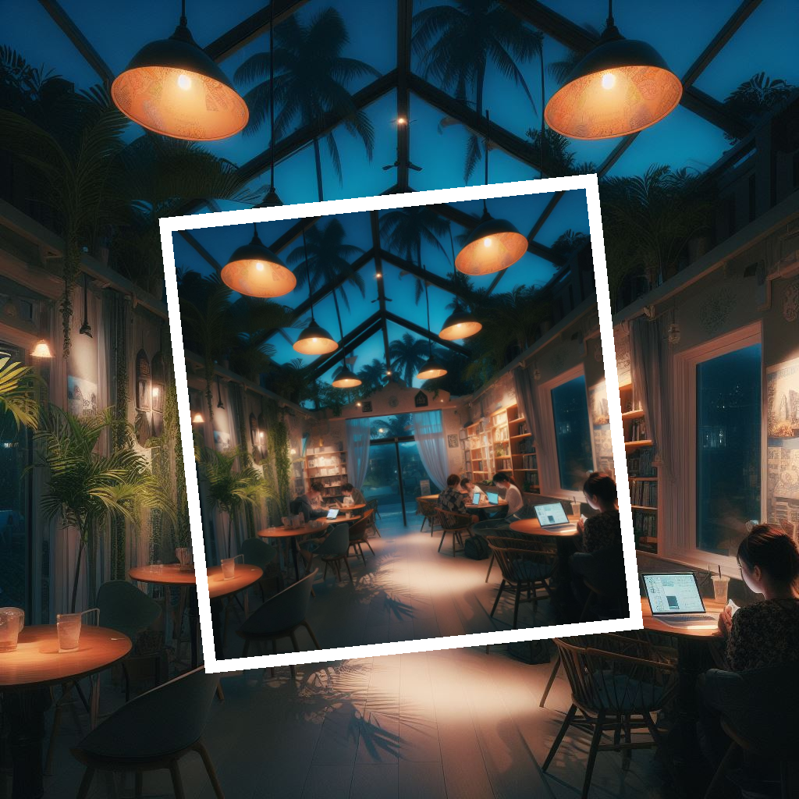

Cozy Palm Cafe is a cozy and relaxing place to enjoy Saipan’s cuisine and culture, using fresh, local, and organic ingredients. It supports local farmers and artisans, and cares about the community and the environment.
More than just a Cafe
Cozy Palms Cafe is more than just a coffee shop. It’s a place where you can relax, unwind, and enjoy the island life. Whether you’re looking for a delicious breakfast, a refreshing smoothie, or a mouthwatering sandwich, we have something for everyone. Our menu features local ingredients, organic coffee, and vegan options. Our staff are friendly, helpful, and ready to make you feel at home. Come and experience the cozy, islander vibes at Cozy Palms Cafe today. You’ll be glad you did.
The ideal spot for night work
We have a cozy and quiet atmosphere, with free Wi-Fi and power outlets. You can enjoy our delicious coffee and snacks, and get discounts with your student ID. You can also meet other students and make new friends. The Cozy Palms Cafe is the best place to study at night in Saipan. Come and see for yourself!